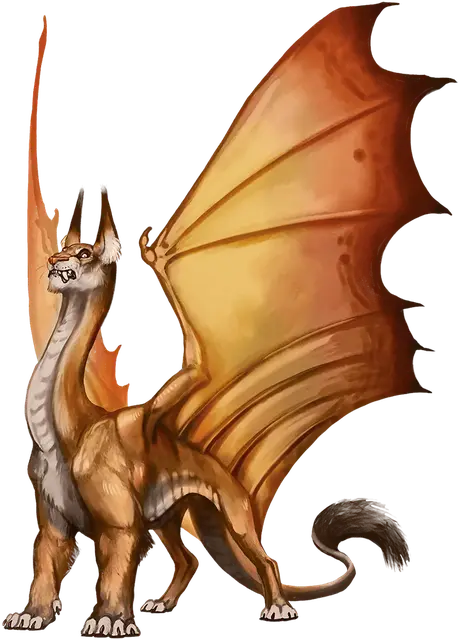

Драколев
Liondrake
Большой Монстр, нейтральный

Класс Доспеха 16 (природный доспех)
Хиты 119 (14к10 + 42)
Скорость 40 футов, летая 60 футов
| мод | спас | ||
|---|---|---|---|
| СИЛ | 19 | +4 | +4 |
| ЛОВ | 15 | +2 | +2 |
| ТЕЛ | 17 | +3 | +3 |
| мод | спас | ||
|---|---|---|---|
| ИНТ | 6 | −2 | −2 |
| МДР | 12 | +1 | +1 |
| ХАР | 12 | +1 | +1 |
Навыки Восприятие +7
Чувства тёмное зрение 60 футов, пассивное Восприятие 17
Языки Драконий
Опасность 7 (2900 опыта)
Бонус мастерства +3
Действия
Мультиатака. Драколев совершает одну атаку Укусом и две атаки Когтями.
Укус. . Рукопашная атака оружием: +7 к попаданию, досягаемость 5 фт., одна цель. Попадание: 15 (2к10+4) колющего урона. Если целью является существо Среднего размера или меньше, оно должно преуспеть в спасброске Силы Сл 15, иначе станет сбитым с ног.
Коготь. . Рукопашная атака оружием: +7 к попаданию, досягаемость 5 фт., одна цель. Попадание: 11 (2к6+4) рубящего урона.
Леденящий кровь рёв (перезарядка 4-6). Драколев издает ужасающий рев, слышимый на расстоянии 300 фт.. Все существа в пределах 30 фт. от дракольва, которые могут слышать его рев, должны преуспеть в спасброске Мудрости Сл 14, иначе станут испуганными дракольвом на 1 минуту. Существо, которое проваливает спасбросок на 5 или более, также становится парализованным на тоже время. Существо может повторять спасбросок в конце каждого своего хода, оканчивая на себе эффект в случае успеха. Если спасбросок цели успешен или эффект для неё оканчивается, цель становится невосприимчива к леденящему кровь рёву этого дракольва в течение следующих 24 часов.
Описание
Драколев - это одинокий хищник окраин с длинной шеей и крыльями медного дракона, а также головой и телом льва (включая роскошную гриву у самцов). Дракольвы полагаются на свою свирепость и свой ужасный рев, чтобы одолеть добычу и отогнать соперников.
Дракольвы - ненасытные охотники, которые обитают на хорошо освоенных территориях. Обычно они не охотятся на людей, но те люди, которые вторгаются на территорию дракольвов, являются честной добычей, что кормит существа, обладающего репутацией хищника жаждущего плоти гуманоидов.